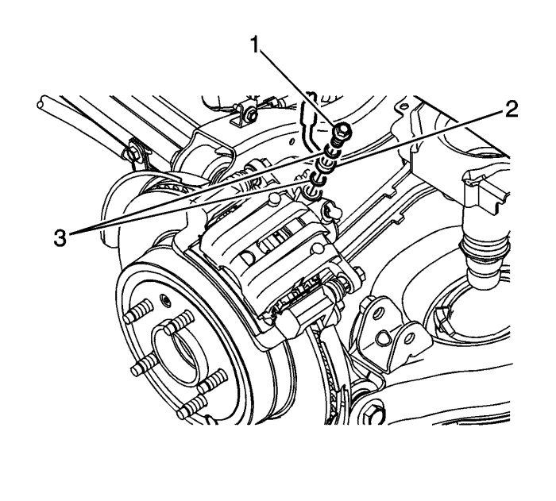
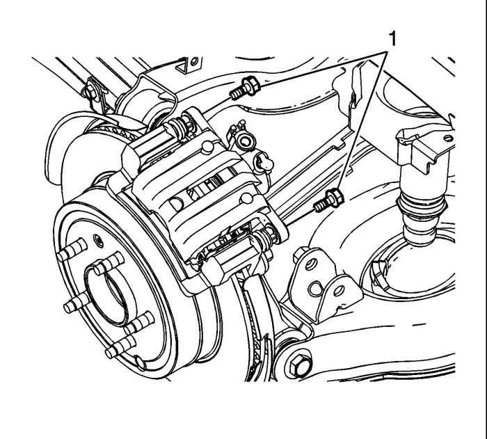

Sustitución de la pinza de freno trasero
Procedimiento de desmontaje
Advertencia: Consulte Advertencia relacionada con el polvo procedente de los frenos en la sección Prólogo.
Advertencia: Consulte Advertencia de líquido de frenos irritante en la sección Prólogo.
- Elevar el vehículo y soportarlo de manera segura. Consultar Elevación del vehículo con un gato .
- Desmonte la rueda del vehículo. Consultar Desmontaje y montaje de la rueda y el neumático .

- Desmonte el tornillo (1) del racor del latiguillo del freno.
- Desmonte el racor (2) del latiguillo del freno de la pinza del freno.
Nota: No reutilice las juntas del racor del latiguillo del freno.
- Retire y deseche las juntas (3) del racor del latiguillo del freno.
- Tape el racor del latiguillo del freno para evitar la pérdida y la contaminación del líquido de frenos.

Nota:
| • | NO utilice herramientas neumáticas para montar o desmontar los pernos de pasador guía. Use EXCLUSIVAMENTE herramientas manuales. |
| • | Coloque una llave de boca para mantener el pasador guía de pinza alineado con la pinza de freno mientras extrae o monta el perno de pasador guía de pinza. NO deje que la llave de boca entre en contacto con la pinza de freno. Si la llave de boca entrara en contacto con la pinza de freno, provocaría una pulsación al aplicar los frenos. |
- Utilizando una llave adicional para mantener fijos los pasadores guía de la pinza del freno, desmonte los tornillos (1) del pasador guía de la pinza del freno.
- Desmontar la pinza de freno.
Procedimiento de montaje
- Monte la pinza de freno.
Precaución: Consulte Precaución con las fijaciones en la sección Prólogo.
- Utilizando una llave adicional para mantener fijos los pasadores guía de la pinza del freno, monte los tornillos (1) del pasador guía de la pinza del freno y apriételos a un par de 44 N·m (32 lb pie).
Nota: Coloque nuevas juntas en el racor del latiguillo del freno.
- Acople el tornillo (1) del racor del latiguillo del freno al racor (2) del latiguillo del freno utilizando 2 nuevas juntas (3) para el racor del latiguillo del freno.
- Acople el conjunto del latiguillo del freno a la pinza del freno y apriete el tornillo del racor del latiguillo del freno a un par de 44 N·m (32 lb pie).
- Purgue el sistema de sistema de frenos hidráulicos. Consultar Purga de aire del sistema de frenos hidráulicos : Manual → Presión .
- Monte el conjunto de neumático y llanta. Consultar Desmontaje y montaje de la rueda y el neumático .
| © Copyright Chevrolet Europe. All rights reserved |